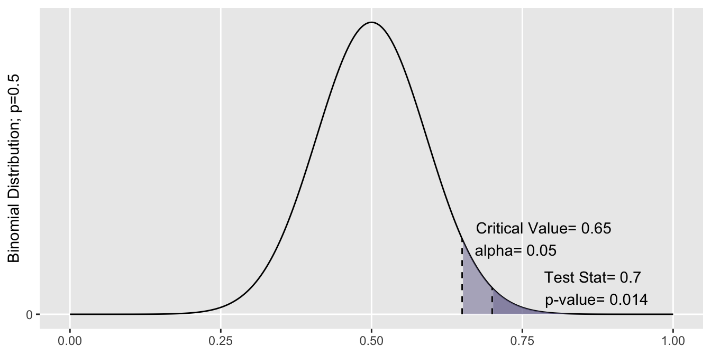
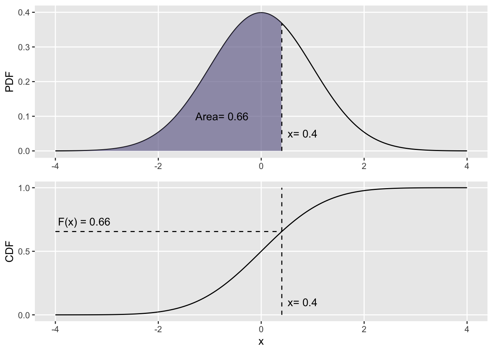

Statistical Foundations
Testing Basics
This handbook assumes knowledge of basic statistical testing, ideas such as p-values and hypothesis testing. Here’s a quick refresher:
Samples and Populations
Say you and your buddy get in a disagreement: You claim to shoot over 50% from the free-throw line, your friend thinks otherwise. Since we don’t actually know what your true ability is, or the proportion of shots you can make, we have to estimate it somehow. Let’s denote the true ability as \(p\). This is a population parameter, the value we’re trying to estimate.
The both of you hit the courts, and shoot 30 balls. We can take the proportion of shots you make as \(\hat{p}\), called a test statistic. These 30 shots are a sample of all the shots you’ve ever taken. The fundamental idea behind statistical testing is that we can estimate \(p\) from \(\hat{p}\).
Hypotheses
The first step is to develop a set of hypotheses. The Null Hypothesis, \(H_0\), indicates our default belief. These are typically structured where the population parameter equals some value, i.e. \(p=0.5\). We could write this succinctly as \(H_0: p=0.5\). Why is it incorrect to say \(H_0: \hat{p}=0.5\)? As you recall, \(\hat{p}\) is the test statistic we’ve generated from our sample, so it’s fairly obvious if it differs from \(0.5\).
Only if there is sufficiently evidence to overturn the null, we can reject it in favor of the Alternative Hypothesis, \(H_a\). This can have a range of values that reflects our expectations. If the argument is that your ability is greater than 50%, you’ll use a “greater than” hypothesis, i.e. \(H_a: p > 0.5\). Similarly, we can have a “less than” direction with \(H_a: p < 0.5\). If we don’t have a specified direction, simply that your ability is not 50%, we can use a “two sided” hypothesis, \(H_a: p \neq 0.5\). This also works if we’re just looking for significance in either direction, without presupposing which.
For the time being, let’s use the following hypotheses:
\[ H_0: p = 0.5 \\ H_a: p > 0.5 \]
Confidence Level
Say you shoot 16 of 30 shots, so \(\hat{p}=0.53\). There’s some evidence that you shoot better than 50%, but its not as convincing as if you were to make 21 of 30 shots \(\hat{p}=0.67\).
We could conclude your true ability is above 50% in either case, but it’s far more likely you’re making an incorrect conclusion in the first scenario. Let’s set our tolerance for errors at a certain level, \(\alpha\).
\(\alpha\) is known as the false positive rate, or probability of making a Type I error. All that says is when \(H_0\) is true (i.e. \(p\) really does \(=0.5\)), we expect to incorrectly reject \(H_a\) about \(\alpha\)% of the time. By convention, we set \(\alpha=0.05\), but other values may be appropriate given the context. As an aside, \(\alpha=0.05\) implies a confidence level of \(100-\alpha = 95\%\).
Testing
A recap of our process so far: We are testing the hypothesis that \(p > 0.5\), against the null \(p=0\). We took a sample of \(n=\) 30 shots, and made 21 of them. Our test statistic is \(\hat{p}=\)\(\frac{21}{30}=\)\(0.70\). We specified a confidence level of 95%, so we get \(\alpha=0.05\).
In order to reject the null in favor of the alternative, we’re looking for sufficient evidence from our test statistic. Consider this: if the test statistic did indeed come from a distribution where the true parameter is \(p=0.5\), how likely is it that we’d get \(\hat{p}\) of \(0.70\) or greater?
By the distribution specified by the null hypothesis (\(\hat{p} \sim Binomial(n=30, p=0.5)\)), the probability of getting a test statistic as or more extreme than 0.70 is 0.014. That’s a pretty low number, meaning it’s very unusual to be making 21 of 30 shots when we’re expecting to hit 15. This evidence against the null is called the p-value, and was generated from the test statistic.

Because our p-value was less than alpha, we see that there is sufficient evidence to reject the null hypothesis, that \(p=0.5\). We thus conclude that \(p\) must be \(>0.50\).
That’s it! If you were able to follow along thus far, you’ve got the necessary background for the rest of the handbook. If not, give this section another look over, or check out some great online resources at Khan Academy.
Math Notation
In this section, you’ll may across some notation rooted in probability. Don’t be intimidated. Everyone has their own comfort level with math. Instead of omitting it entirely, we’ve kept in the formulas as details for the curious. Here’s some basic pointers, but if there’s something you don’t understand, you can probably skip it without concern.
Indices. Counters like \(i\) or \(j\) just refer to a particular observation in a set. For example, \((x_i,y_j)\) can be read as “some pair from two sets”, where \(x_i\) is a part of \(X\), and \(y_j\) is a part of \(Y\).
Sums. Something like \(\sum_{i=1}^n x_i\) can be read as “add together each observation \(x_i\) in the set \(X\)”.
Ranks: \(R(X_i)\) can be read as the rank of observation \(i\) in sample \(X\). If we have \(n\) observations, the ranks go in ascending order, \(1 \dots n\).
Combinations. Something like \(\binom{5}{2}\) is read as “Five choose two”, or the probability of selecting a combination of 2 items out of 5 possibilities. More generally: \(\binom{n}{k} = \frac{n!}{k!(n-k)!}\)
Probability Distribution Function (PDF). \(f_x(x)\) describes the relative likelihood (not probability) of seeing the value \(x\), when \(x\) is continuous. It is always \(\geq0\), and the integral across all values \(\int_{-\infty}^{\infty}f_x(x)dx\) must \(=1\).
Cumulative Distribution Function (CDF). \(F_x(x)\) describes the probability of seeing a value less than or equal to \(x\), \(F_x(x) = Pr(X\leq x)\). Mathematically, it is the integral of the pdf \(f_x(x)\) for each point \(x\): \(F_x(x) = \int_{-\infty}^{x}f_t(t)dt\). To visualize that relationship:
